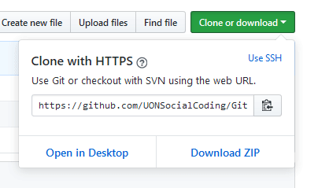

goo.gl/wRNd3S
Welcome! ❤️
So first of all, welcome.
We'll be discussing:
- Taking your repo online
- Contributing to open source software
- And lots of practical stuff! 🎉
We've got lots to talk about, and I'm going to try and move through things relatively quickly. If I go too quickly, please someone stop me. Also feel free to ask questions at any time throughout this presentation.
A quick recap: repositories
They contain:
- Commits
- Branches
- Source code
- Documentation
- Other junk
Repositories do not have to be local!
We can host them on the internet; and that's the crux of this presentation
There are some great websites for this:
- GitHub
- GitLab
- BitBucket
- and more...
These websites are the reason that open source programming exists. You host a repo online, and anyone in the world can learn from and contribute to the code. They will also come in very handy for group programming assignments.
We'll be using GitHub for group projects
Voxel Engine is already hosted here.
Even this presentation has a git repo! It's called GitGud.
Okay Sean, but how do we contribute?
We have to understand local and remote
A local repo is a repository that is stored on your computer, and each contributor has one. There is then one remote, that is shared by everyone. This remote repo is called original.
Push: send commits from local to remote
git push origin master
Once you've made some changes on your local repo, you can push them to remote for everyone to see. You can push as often as you like, and in fact, I strongly recommend it.
Name of remote
git push origin master
It's conventional to call our remote origin. And if you have problems with git later down the track and you need to scour StackOverflow, it will be invaluable to have your remote named origin.
Which branch?
git push origin master
Notice that pushing, does not automatically update every repo. Only the remote.
In the above example, we can see that I pushed some changes to remote, yet the other contributors are still only on version 1.0.
This is a very important feature; it prevents changes that one contributor makes, from interrupting the changes of another contributor.
So how do we solve this? How do the other contributors catch up to the remote?
Pull: retrieve new updates from remote
git pull
Pulling is a form of synchronisation. You're updating your local repo, to be more like remote.
Notice here that Jon has pulled, and his local repo is now up to date! We strongly recommend that you always pull before making changes to a repository. It simplifies things in the long run.
Cloning!
git clone https://github.com/(...).git
Cloning involves copying a remote repository onto your computer. It's kind of like an initial pull.
There is a better way to clone. 
Normally, when you clone a repo from GitHub, you have to enter your username and password. This can be quite painful, especially if you use a password manager. To get around this, we can make the swap to SSH. However, it will require some set up on your part. You'll need to generate an SSH key, and add it to your GitHub account. I'll leave this as an exercise for you to do in your own time though. So for now, just use HTTPS.
A quick
review. Our new process is:
- Clone or pull from remote
- Make modifications
- Stage changes
- Commit with meaningful message
- Push
Or, in command form:
git clone ... or git pull- Make modifications
git add *git commit -m "Meaningful message"git push origin master
Questions?
Let's dive into something practical 🎊
But wait! There's a problem with this setup...
With the current setup, anyone can push anything they want at any time. How do we control code quality? How do we keep things consistent? And, should it ever come to it, what happens if we want to reject a change?
With Forking!
Forking is like cloning the remote repository.
When we utilise forking, each contributor has two repositories. One local and one remote. There is then a common remote that is considered the original, main repository, as seen in the middle of this diagram. However, the benefits of this may not be immediately obvious.
Pull requests
- Bridge the gap between remotes
- Allow maintainers to review code
- Automated software
Once you've forked a repository and made some changes, it's time to make a pull request to the original repository. A pull request, is a formal request for a project maintainer to review your code, and then pull your changes into the main repository. The project's maintainers will provide you with feedback. Such feedback may be: add a comment here, remove this line, please use this feature instead. The goal is to have some sort of cyclical process.
So let's dissect a pull request on GitHub. There is a lot going on here, but don't worry, I'm going to break it down. For starters, at the top of every pull request is a title and a description.
Project maintainers keep a project on track
Not only are project maintainers vital for maintaining code quality, but they are also community managers. Around any large open source project is a community. A community of contributors that interact with each other on a daily basis. It is the role of the maintainer to ensure that contributors have any resources they might need, and are managed in such a way that the project development can feasible continue forever. For VoxelEngine, Jon and I will be the project maintainers. So if you have any questions, feel free to ask either of us.
Another quick
recap. Our cyclical process is now:
- Fork
- Clone
- Change, stage, commit
- Push
- Make a pull request
Let's do something else practical 🎉
It's dangerous to go alone... take these:
- Don't forget to fork first!
git clone ... or git pullgit status and git add *git commit -m "meaningful message"git push origin master